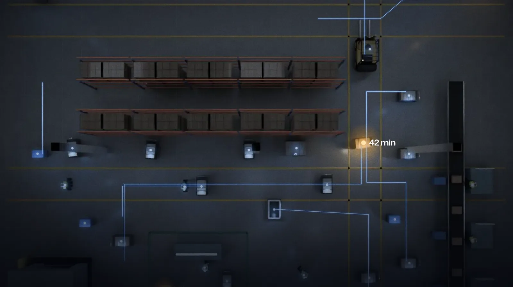

Where work is. Where it waits.
AmIMotion is spatial intelligence for factories and warehouses. A small tag rides on each trolley, bin and tool. Anchors on your columns hear its signal. One live map shows where it went and how long it has waited. You find out from a screen, not a walk.


One trolley here has waited 42 minutes.
Can you tell which one? You have three picks.
A small tag on each one shows where it is.
Every trolley, bin, pallet, forklift, robot and person. Right now, typically to within 10 cm.
And how long it has waited.
There's your trolley. 42 minutes, at the end of the racks.
What has waited longest?
Trolley 14. End of the racks. 42 minutes.
You find out from a screen, not a walk.
Three parts work as one system.
-
Screws or sticks onto the trolley. Sends a short UWB radio pulse when it moves and sleeps when it stops.
Read more
While it sleeps, the map shows where it was last seen. If it comes off the trolley, the map still shows its last-seen spot. One battery lasts 1 to 3 years, depending on use. AmIHub tracks each tag's health and battery level.
-
Fixed to a column or wall 3 to 8 m up. Records when each pulse arrives and the angle it came from.
Read more
Needs only power, from DC or PoE. It syncs over the air, with no sync cable. It sends its data to AmIHub over Wi-Fi, so it needs no separate data cable. Ethernet is also an option. Each reaches about 50 m around it in clear line of sight. Racking and steel change that, so we survey your floor and set the count. With these anchors, AmIHub places a tag down to ±10 cm. How close depends on your floor. You set anchors up from a phone app. AmIHub finds each one on its own and raises an alert if one goes dark.
-
Works out where each tag is from those times and angles. Runs on an industrial PC inside your plant, with no internet needed.
Read more
Your MES, ERP and WMS connect to it through open REST, MQTT, WebSocket and omlox hub interfaces. Your team, your systems and AI assistants read the same live map. Your MES stays in charge of every job. AmIHub adds where its trolley is and how long it has waited.



Built on the FiRa and omlox specifications.
Different floors. One live map.
Know moreGuides
-
What is WIP visibility? Where each job is, and how long it waited.
What it means, what it needs, and where a plant should start.
-
How is dwell time measured? From zone entry to zone exit.
What dwell includes, where the edge cases hide, and how AmIMotion times every wait.
-
Can AI assistants query location data? Yes, through MCP.
How an assistant reads the floor, and what keeps it in check.
-
UWB, BLE or RFID? Choose by the question you ask.
A fair way to pick a radio for trolleys, bins and work in progress.
-
Value before the MES link? Yes. Location and time come first.
What location proves on its own, and when the MES connection should follow.
Decades of shipping hardware. Now building for the factory floor.
-

20 years in product development and business growth. Scaled products from 0 to 1 and led P&L across global markets.
Connect on LinkedInKaushal Kukkar
Founder and CEO
-

22 years in hardware systems design and manufacturing. Deep expertise in RF, embedded and volume production.
Connect on LinkedInVivek Dham
CTO
-

24 years in wireless product development. Shipped connectivity products across UWB, BLE and Wi-Fi stacks.
Connect on LinkedInSumeer Bhatara
Head of Software
Start withone bay.
A pilot follows one flow in one bay or line. You choose the flow.
How a pilot runs
The pilot times today's waits first, over a window you choose. That is your baseline. Before it starts, we agree how to count a wait that runs past shift end. We also agree who on your team acts when work waits too long.
The pilot tags trolleys, bins and pallets, not people. Tagging people would be a separate project. It would need its own policy. You also set how long the map keeps its history.
You see your own waits in one bay, and prove the numbers, before you decide on more. Then grow plant-wide on the same AmIHub, without re-fitting the first bay. A second plant gets its own survey, and AmIHub can run both from one console.
What you buy
AmIGo tags, AmIMo anchors and AmIHub, plus our survey and an anchor plan for your floor. Designed and built in India, with local stock and local engineers on your site. One contract and one support line cover every layer. Your team or your integrator can build on it at any layer, through open interfaces. After the first call, we share datasheets, architecture, prices and pilot options under NDA. AmIMotion is led by Kaushal Kukkar, founder and CEO, and Vivek Dham, CTO.